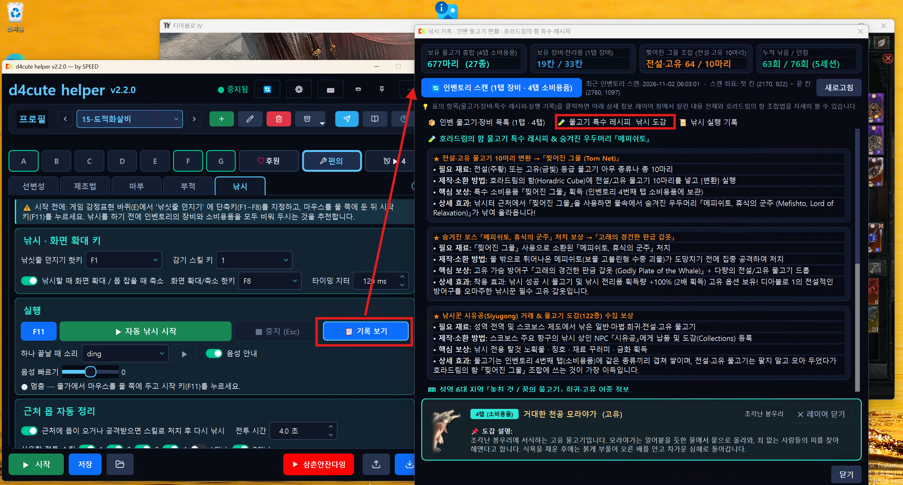

인벤 선변성과 호라드림의 함 제조법(속성 제거 · 전설로 업그레이드 · 고유 아이템 제작 · 신화로 업그레이드)과 자동 마부 · 자동 부적을 쓰는 방법, 저해상도에서 준비할 것, 안 될 때 먼저 볼 것을 정리했습니다.
How to use Inventory Transfigure and the Horadric Cube recipes (Remove Affix · Upgrade to Legendary · Unique crafting · Upgrade to Mythic), Auto Enchant and Auto Charm, what to prepare on lower resolutions, and what to check first when something does not work.
인벤 선변성 탭에서 첫 칸(왼쪽 위)과 끝 칸(오른쪽 아래)을 한 번 찍습니다. [찍기] 를 누르고 게임의 그 칸에 마우스를 올린 뒤 Enter. 제조법도 이 자리를 같이 씁니다.
On the Inventory Transfigure tab, mark the first slot (top-left) and the last slot (bottom-right) once: press [Mark], hover that slot in game and press Enter. Recipes use the same slots.
시작 키는 하나를 같이 씁니다(기본 F11). 편의기능에서 열려 있는 탭의 기능이 시작됩니다. 멈추려면 게임에서 Esc 또는 [중지].
One start key is shared (default F11); it starts the tool of the tab that is open. To stop, press Esc in game or [Stop].
호라드림의 함과 인벤토리를 둘 다 열어 둔 채 시작합니다. 시작하면 헬퍼가 게임 창을 앞으로 가져옵니다.
Start with the Horadric Cube and the inventory both open. The helper brings the game window to the front.
아이템 하나가 끝날 때 짧은 소리, 시작과 끝에 음성 안내(예: “속성 제거, 30개 모두 완료했습니다.”). 진행 상황은 캐릭터 창 위 진행 카드에 보입니다.
A short sound per item and voice guidance at start and end (e.g. “Remove Affix, all 30 done.”). Progress shows on a card over the character panel.
인벤토리의 아이템을 한 칸씩 아이템 변성합니다. 시작하면 먼저 변성할 수 있는 칸만 골라 두고(어두워지는 칸은 뺍니다) 그 칸만 돕니다.
Transfigures inventory items one slot at a time. It first picks only the slots that can be transfigured (dimmed slots are skipped).
제조법 탭에서 하나를 고르고 ▶ 시작 → 확인 창 → 정한 초만큼 기다린 뒤 시작합니다. 제조법 줄은 화면 글자로 찾고, 목록 아래쪽 줄은 휠로 내려서 찾습니다.
Pick a recipe, press ▶ Start → confirm → it starts after the delay you set. Recipe rows are found by reading the screen; lower rows are reached with the mouse wheel.
마법·희귀 아이템의 속성을 모두 지워 일반 아이템으로 만듭니다. 한 아이템에서 변환 버튼이 꺼질 때까지(속성이 다 지워질 때까지) 계속 누르고, 초기화를 여러 번 눌러 다음 아이템으로 갑니다.
Removes all affixes from magic/rare items. It keeps converting until the Convert button turns off, then resets (several clicks) and moves on.
인벤 칸 바탕색으로 마법(파랑)과 희귀(노랑)만 고릅니다. 전설·고유·신화는 건드리지 않습니다.
Only magic (blue) and rare (yellow) slots are picked by their background color. Legendary, unique and mythic items are left alone.
일반 장비를 같은 종류의 무작위 고유 아이템으로 만듭니다. 결과는 인벤 빈 칸으로 들어가 배치가 바뀌므로 한 개씩 꼼꼼히(천천히) 진행합니다.
Turns normal gear into a random unique of the same type. The result goes to an empty slot, so the layout changes and it proceeds carefully, one by one.
선조 고유 아이템을 신화로 만듭니다. 고유 아이템 제작과 같이 빈 칸 1칸이 필요하고 한 개씩 진행합니다. 재료(반짝이는 벼락불)를 많이 쓰니 대상을 확인하고 쓰세요.
Upgrades ancestral uniques to mythic. Like unique crafting it needs 1 free slot and goes one at a time. It uses expensive materials — double-check the items first.
원하는 속성·수치가 나올 때까지 비술사 속성 교체를 되풀이합니다. 매번 쓴 골드를 더해 한도를 넘기 전에 멈춥니다.
Repeats the Occultist affix reroll until the affix and value you want appear. It adds up the gold each time and stops before the limit.
풀마다 후보를 2개까지 고를 수 있습니다. 같은 풀에서는 먼저 나온 후보로 맞은 것으로 봅니다. 포바·페르·믈로르·린타·베루 스위치로 원하는 조각만 남길 수 있고, 끄면 확률이 그만큼 줄어듭니다. 돌린 내용은 [기록 보기] 에 남습니다.
Each pool takes up to two options, and whichever appears first counts. Piece switches keep only the charms you want, which lowers the chance. Every run is kept in [History].
호라드림의 함 제조법 “세트 부적 무작위 변경”으로 세트 부적을 굴려, 고른 속성이 나올 때까지 되풀이합니다. 부적은 굴려도 그대로 남습니다.
Rerolls a set charm with the Horadric Cube recipe “Reroll Set Charm” over and over until the affixes you picked show up. The charm itself stays in the cube.
세트 부적에는 속성이 정확히 2개 붙고, A 묶음에서 하나 + B 묶음에서 하나입니다. 같은 묶음의 속성 두 개는 절대 함께 나오지 않습니다. 줄 순서는 상관없습니다.
Every set charm has exactly 2 affixes: one from pool A and one from pool B. Two affixes from the same pool never appear together. The line order does not matter.
★ 는 최고 수치의 ×1.25(반올림)입니다. 예: 최대 자원 일반 15~20 → ★ 25, 명사수 기술 일반 2~3 → ★ 4, 경험치 2~10 → ★ 13.
★ is the top value ×1.25, rounded. E.g. maximum resource normal 15–20 → ★ 25, Marksman skills normal 2–3 → ★ 4, experience 2–10 → ★ 13.
일부 속성은 아이템 위력 900 부적에서만 최고 범위가 나옵니다(최대 자원은 850 부적 10~15, 900 부적 15~20). 목표가 900 을 필요로 하는데 부적이 850 이면 헬퍼는 시작하지 않고 빨간 경고와 음성으로 알립니다. 900 부적을 권장합니다.
Some affixes only reach their top range on Item Power 900 charms (maximum resource is 10–15 on an 850 charm, 15–20 on 900). If your goal needs 900 and the charm is 850, the helper refuses to start and warns in red with a voice message. A 900 charm is recommended.
8개 직업(원소술사 · 드루이드 · 야만용사 · 도적 · 강령술사 · 혼령사 · 성기사 · 흑마법사)의 세트와 공용 세트 5개(학살 · 숙련된 기법 · 생존 · 어두운 맹약 · 숙련)를 지원합니다.
Supports the sets of all 8 classes (Sorcerer, Druid, Barbarian, Rogue, Necromancer, Spiritborn, Paladin, Warlock) and 5 common sets (Slaughter, Mastered Technique, Survival, Dark Covenant, Mastery).
탭에 한 번 굴릴 때의 확률이 표시되고, 아래 재료표에서 평균 · 50% · 90% 확률로 목표를 얻는 데 필요한 굴림 횟수, 주입된 호라드림 수액, 미가공 태고의 가루, 그리고 적중 확률을 볼 수 있습니다. 내 재료 줄과 비교해 모자라지 않은지 먼저 확인하세요.
The tab shows the chance per roll. The materials table lists, for average · 50% · 90% chance, the number of rolls, Infused Horadric Sap, Raw Ancient Dust and the hit chance. Compare it with your own My materials row first.
한 번 굴릴 때 비용(게임 화면 기준): 미가공 태고의 가루 25 + 주입된 호라드림 수액 50.
Cost per roll (game screen): Raw Ancient Dust 25 + Infused Horadric Sap 50.
줄 던지기, 입질 감기, 전리품 줍기를 이어서 돌립니다. 물가에 서서 시작해 주세요.
Casts, reels on a bite, and picks up the loot in a loop. Stand at the water's edge before you start.
같은 텔레그램 계정으로 연동한 다른 PC 는 코드 없이 열립니다. 연동을 끊거나 채널·그룹에서 나가면 낚시가 멈춥니다.
Other PCs linked to the same Telegram account open without a code. Unlinking or leaving the channel or group stops fishing.
| 낚싯줄 던지기 | Cast | 감정표현 바퀴의 낚싯줄 던지기에 지정한 키 (기본 F1) | The key set for casting on the emote wheel (default F1) |
| 감기 스킬 | Reel | 줄을 던지면 스킬창이 모두 감기로 바뀝니다. 그 칸의 키 (기본 1) | Skill slots turn into Reel after casting. Use that slot's key (default 1) |
| 화면 확대/축소 | Zoom | 게임에 지정한 키 (기본 F8) | The key set in the game (default F8) |
| 아이템 이름 표시 | Item names | 게임플레이 설정에서 단축키 누르면 10초간 표시로 맞춥니다. 헬퍼가 Alt 로 이름을 켜서 읽습니다. | Set it to show for 10 seconds on key press in Gameplay settings. The helper uses Alt to read names. |

| 시작이 안 눌림 | Start is disabled | 사용 코드 단계를 끝냈는지, 채널·그룹에 남아 있는지 봅니다. | Finish the code steps and stay in the channel and group. |
| 줄이 안 던져짐 | Line will not cast | 물가로 옮기고 던지기 키를 확인합니다. 8번 연속 안 되면 멈춥니다. | Move to the water and check the cast key. It stops after 8 misses in a row. |
| 이름을 못 읽음 | Names not read | 아이템 이름 표시 설정을 다시 확인합니다. | Check the item name setting again. |
| 캐릭터가 걸어감 | Character walks | 줍기 회전 반경을 줄이거나 회전 중심을 맞춥니다. | Reduce the spin radius or adjust its center. |
선변성·제조법을 돌리는 동안 캐릭터 창 그림 자리(양옆 장비 칸 사이)에 진행 카드가 뜹니다. 크기와 글자는 인벤 칸 간격 비율로 정해져 해상도가 달라도 같은 모양입니다. 마우스로 누를 수 없고 게임 조작을 막지 않습니다.
While a tool runs, a progress card appears over the character portrait area (between the equipment columns). Its size follows the inventory slot spacing, so it looks the same at any resolution. It cannot be clicked and never blocks game input.
금색 - 진행 중
Gold - running
초록 - 끝남 (7초 뒤 사라짐)
Green - finished (fades after 7 s)
빨강 - 시작 못 함 (15초 남음) + 음성 “인벤토리 한 칸을 비워 주세요”
Red - could not start (stays 15 s) + voice “Please free up one inventory slot”
| n 초 뒤 시작 | 확인 뒤 대기 중입니다. 이때 게임 창으로 넘어가세요. |
| 아이템 올리기 | 칸을 우클릭해 큐브에 올리는 중입니다. |
| (제조법 이름) | 제조법 줄을 찾아 누르는 중입니다. ‘(선택 유지)’ 는 이미 골라져 있어 누르지 않은 것입니다. |
| 변환 · 변환 n | 변환 버튼을 눌렀습니다. 숫자는 반복 횟수입니다. |
| 수락(Enter) | 귀속 확인 창이 떠서 Enter 를 눌렀습니다. |
| 결과 대기 | 변환 연출이 끝나기를 기다립니다(느린 PC 는 길어집니다). |
| 초기화 | 큐브를 비우고 아이템이 칸으로 돌아왔는지 확인합니다. |
| 전설로 업그레이드 | (전설) 속성이 4개가 되어 바로 전설로 올리는 중입니다. |
| 안 되는 아이템 - 넘김 | 그 아이템엔 제조법이 안 되어 넘깁니다(재료가 모자랄 때도 여기로 옵니다). |
| 계정 귀속 - 건너뜀 | (선변성) 이미 귀속된 아이템을 재료 절약을 위해 넘깁니다. |
| Starting in n s | Waiting after confirm — switch to the game now. |
| Placing item | Right-clicking the slot into the cube. |
| (recipe name) | Finding and clicking the recipe row. ‘(kept)’ means it was already selected and not clicked. |
| Convert · Convert n | Convert was pressed; n is the repeat count. |
| Accept (Enter) | The bind confirmation appeared and Enter was pressed. |
| Waiting for result | Waiting for the conversion animation (longer on slow PCs). |
| Reset | Clearing the cube and checking the item returned to its slot. |
| Upgrade to Legendary | (Legendary) the item reached 4 affixes and is upgraded right away. |
| Not possible - skipped | The recipe does not apply to that item (also when materials run out). |
| Account-bound - skipped | (Transfigure) already bound, skipped to save materials. |
시작·끝 안내 문구가 잠깐 뜹니다(시작 금색, 끝 주황). 헬퍼 설정에서 오버레이를 껐다면 뜨지 않습니다.
Start/finish notices appear briefly (start gold, finish orange). Hidden if overlays are turned off in the helper settings.
선변성 탭에서 [자리 확인] 을 누르면 찍어 둔 첫 칸·끝 칸과 전체 칸 자리를 게임 위에 네모로 보여 줍니다.
On the Transfigure tab, [Check slots] draws boxes over the marked first/last slot and every slot.
아이템 하나가 끝날 때 짧은 소리, 시작할 때 “속성 제거 시작합니다.”, 끝날 때 “30개 중 28개 성공했습니다.” 처럼 알려 줍니다(음성 안내 스위치).
A short sound per item, “Starting Remove Affix.” at start and “28 of 30 succeeded.” at the end (Voice switch).
헬퍼는 화면 글자(OCR)와 칸 색을 읽습니다. 화면이 작을수록 글자가 작아져 아래 준비가 중요합니다.
The helper reads on-screen text (OCR) and slot colors. On smaller screens text gets small, so these settings matter.
| 항목 | Item | 권장 | Recommended |
|---|---|---|---|
| 게임 해상도 | Game resolution | 1920×1080 이상. 더 낮으면 제조법 글자를 못 읽을 수 있습니다. | 1920×1080 or higher. Lower may make recipe text unreadable. |
| 화면 모드 | Display mode | 전체 화면 또는 테두리 없는 창. 창을 옮기거나 크기를 바꿨다면 인벤 자리를 다시 찍기. | Fullscreen or borderless. If you move/resize the window, mark the inventory slots again. |
| 해상도를 바꿨을 때 | After changing resolution | 첫 칸·끝 칸을 꼭 다시 찍습니다. 예전 자리로는 엉뚱한 곳을 누릅니다. | Always re-mark the first/last slot. Old positions click the wrong place. |
| 게임 UI 크기 · 글꼴 | Game UI scale · font | 기본값 권장. 작게 줄이면 글자 읽기가 불안해집니다. | Default recommended. Smaller UI makes text reading unreliable. |
| 밝기 · 감마 · HDR | Brightness · gamma · HDR | 기본값 근처. 아주 어둡게 하면 마법/희귀 칸 색 판정과 어두워진 칸 판정이 틀릴 수 있습니다. | Near default. Very dark settings can break the magic/rare color check and dimmed-slot detection. |
| Windows 배율 | Windows scaling | 어떤 배율이든 됩니다(100~200%). 바꿨다면 헬퍼를 다시 켜고 자리를 다시 찍기. | Any scaling works (100–200%). If changed, restart the helper and re-mark slots. |
| 게임 언어 | Game language | 지금은 한국어 게임에서 확인되었습니다. 헬퍼 언어와 게임 언어는 따로입니다. | Currently verified with the Korean game client. Helper language and game language are separate. |
마지막 실행의 칸별 기록은 %APPDATA%\d4cute_helper\debug\alter_slots.txt 에 남습니다. 글자를 못 찾은 순간의 화면은 같은 폴더의 alter_miss_*.png 입니다.
Per-slot records of the last run are in %APPDATA%\d4cute_helper\debug\alter_slots.txt. Screens captured when text was not found are alter_miss_*.png in the same folder.